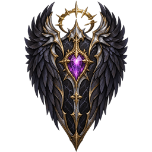

パッチノート
武器の個性で、戦いが変わる。
武器スキルを刷新。状態変化と残りターンの表示、PCの画面サイズ操作も改善しました。
武器スキルの更新
- 短剣は「零刻領域」へ変更。5ターン時間を止め、敵をすり抜けて移動できます。終了時に正面へ攻撃し、背後からなら1.5倍のダメージ。
- 長剣「扇斬り」にHP70回復を追加。槍「貫通突き」は東西南北それぞれ3マスを攻撃し、敵の攻撃力を3ターン30%低下させます。
- 弓「穿ち矢」に2ターンのスタンを追加。拳銃は「五連射」へ変更し、生き残った敵の防御力を3ターン30%低下させます。
- 双剣は「十字絶閃」へ変更。前方5マスを貫通する斬撃を3連発し、各発で通常攻撃の1.5倍のダメージを与えます。大剣「旋風斬り」は従来の効果を維持。
- スキルは引き続き移動100歩でチャージ。専用の演出と効果音を更新しました。
状態表示と画面操作
- 敵の攻撃力・防御力低下をアイコンと残りターンで表示。時間停止中の残りターンも確認できます。
- PCではスキルボタンへのマウス重ねで、スマートフォンでは長押しで、効果の説明と攻撃範囲を確認できます。
- PCに画面サイズの調整ボタンを追加し、タイトルやメニューの表示を調整しました。
パッチノート
冒険の記録を、次の一手へ。
新しいタイトル演出と詳細ログ、ページでめくる図鑑。敵の出現と強化スクロールの入手も調整しました。
タイトル・図鑑・詳細ログ
- 陽光の差す湖のタイトル画面とケルト調の音楽を採用。ループ動画とイラスト付きメニューへ更新しました。
- 装備・モンスター図鑑を、統一したページ切り替え式の表示へ刷新しました。
- 被ダメージと冒険の詳細ログを追加。攻撃・防御・軽減などを振り返り、敗北画面でも最後に受けた攻撃を確認できます。
- 読み込み表示とタイトルからの再開操作を改善しました。
出現・報酬・移動の調整
- 通常ダンジョンにハロウィンの敵が混ざらないよう修正。通常冒険の再開時にもイベント専用の敵を除外します。
- 5の倍数階でボスを倒した後は、長居・召喚・分裂などによる敵の追加出現を止めるようにしました。すでにいる敵は残ります。
- 武器・盾の強化スクロールは、敵・ボス・宝箱を合わせて2フロアの区間ごと（1〜2階、3〜4階…）に1枚までに調整。入手記録はセーブして引き継ぎます。
- 氷の上でクリック移動が止まる不具合を修正しました。
- イベントのガチャから通常の伝説装備アルカディア・ルファルゼントを除外。イベントのSSS装備は金の収穫王のドロップから入手します。
パッチノート
呪われた収穫城へ、ようこそ。
全5層のハロウィンイベントを追加。限定装備を探す冒険と、クリック操作・装備管理の改善をお届けします。
ハロウィンイベントを追加
- タイトルのイベントから「呪われた収穫城」へ。入手済みの武器1本と服1着を選んで、通常冒険とは別の5層に挑めます。
- かぼちゃ・墓守・魔女・首なし騎士・収穫王のボスと専用の部下、迷路・宝物庫・限定装備・専用BGMを追加。遊び方と報酬はこちら。
- 通常冒険とイベントのセーブを分離。イベントの中断・再開に対応し、通常の難易度解放と秘密クエストの進行には影響しません。
- イベント開始時の服選択とボスへの方角表示を追加。ボス部屋のBGM、袋小路の報酬、部下へのダイナマイトのダメージを修正しました。
装備と道具
- ふしぎパンの強化対象を、装備中の武器・盾に限定。HPと所持している武器・盾の耐久は引き続き全回復します。
- 敵・壊せる物・宝箱から出るポーションは、1フロア合計1個まで。ショップの購入枠と初期所持分は別扱いです。
- 装備の耐久低下・破損を知らせる表示と効果音を追加。装備プレビュー、選択画面と修復画面のページ切り替えに対応しました。
- 修復後も選択画面を開いたままにし、道具を使った後のアイテム欄の位置を安定させました。
クリック操作と敵の挙動
- 敵へのマウス重ねで詳細を表示し、ダイナマイトの使用範囲やカーソルのマスを確認できるようにしました。
- 大きな敵・ボス・宝箱をクリックしたときの対象判定を改善。壁にいる敵への攻撃にも対応しました。
- 隠れた敵は松明で見つけられるようにし、見えない敵への操作では気配を知らせます。
- ボスが障害物を避けて移動するよう改善し、通常ボスが部屋の外周まで移動できるようにしました。
- 一部の中間地点の戦闘に以前のボスが登場するよう調整。手持ち武器の向きと握り位置も修正しました。
大型アップデート
踏破の先に、新たな試練。
ハード・マスター、秘密クエスト、黄金の扉。踏破した冒険者にも、これから旅立つ冒険者にも、新しい挑戦と発見を。武器5本・盾15種類を加えた大型アップデートを公開しました。
PICK UPハードとマスターに挑め
ノーマルの30階踏破でハード、ハードの30階踏破でマスターを解放。クリア履歴と選択した難易度を、同じブラウザに保存します。ハードでは青、マスターでは金の描き下ろしフレームが冒険を彩ります。
- 上位の難易度では、ボスの攻撃がさらに手ごわく。光る床の予告を読み、攻撃の順番に合わせて回避しましょう。
- 追加前のクリア履歴は残っていないため、解放判定は追加後の30階踏破から始まります。以前の冒険セーブはノーマルとして再開できます。
PICK UP漆黒の盾ルファルゼント

DARKNESS AWAKENS- 堕天使を思わせる最上位の盾。旧称「ルシファー」から「漆黒の盾ルファルゼント」へ名称を変更しました。所持済みの盾にも新しい名前が反映されます。
- 覇天剣アルカディアと漆黒の盾ルファルゼントを、SSSグレードへ変更。所持済みの装備も、強化値や耐久を引き継いでSSSになります。
- 初期強化値は+10。受けたダメージの20%を反射し、3回に1回の攻撃をブロックします。
- 防具ガチャから0.01%、ボス・中ボス討伐から0.1%の特別抽選で入手できます。
- 盾には揺らめく闇のオーラを、覇天剣アルカディアには剣をらせん状に巡る黄金の光を追加。アルカディアの大きさと光の速度も調整しました。
FIXボスの攻撃予告
- 部屋の外周が範囲攻撃の対象から外れていた不具合を修正。部屋の端も攻撃予告・命中判定の対象になります。
- 同じボス部屋では、離れていても予告攻撃が続くように調整しました。
- 26〜30階の床に表示する攻撃予告を、ほかの階と同じ色と数字に統一しました。
深層ボスのバランス調整
- 16〜20階のフロアボスはHPを1.3倍・攻撃力を1.1倍、21〜25階はHPを1.4倍・攻撃力を1.15倍、26〜30階はHPを1.5倍・攻撃力を1.2倍に調整しました。新たに出現するボスから反映されます。
NEW装備と秘密クエスト
- 武器を5本、盾を15種類追加。武器は全52本、盾は全24種類になりました。服の追加はありません。
- 盾は無属性の各グレードに3種類、各属性に2種類と特別な盾1種類。回復・反撃・属性への耐性など、効果の違いで選べるようにしました。
- メニューに秘密クエストを追加。最初は「？」で隠され、敵が全難易度共通で0.5%の確率で落とす紙の切れ端を5枚集めると内容が明らかになります。切れ端は手帳へ自動回収され、5枚そろった後の討伐からカウント開始。解放前の討伐数は含めず、所持している切れ端と解放済みのクエスト進行は引き継ぎます。
- 同じ種類のモンスターを20体倒すクエストを5つ用意。5つすべて達成すると専用演出でお知らせし、新しい属性武器5本の中から1本を選べます。報酬は全クエストを通して1回限り、強化値は+3です。以前の仕様で報酬を受け取っている場合、追加の受け取りはできません。
NEW黄金の扉とダイヤモンドの宝箱
- 従来の小部屋にあった古い鍵つき扉を撤去。各フロアで10%の確率で、金扉に守られた豪華な7×7の部屋が現れるようにしました。
- ボス部屋のない北側または南側に配置。金扉はフロアキー1個で開きます。
- 部屋の中央にはダイヤモンドの宝箱が1つ。500〜1000Gと、Aグレード以上のランダムな属性武器（+3固定）を入手できます。
UPDATE戦闘の見やすさとバランス
- ふしぎパンのドロップ率を、すべての難易度で1%に変更。通常モンスターの討伐時に独立して抽選し、難易度による補正はかかりません。
- 7系統のスキルアイコンと、斬撃・ビーム・弓などの演出を刷新。地形が見えるよう、背景とエフェクトのサイズを調整しました。
- アウレリウス変身を5階ボスと同じ4方向の絵・サイズに更新。ボスが立っているマスには影を追加しました。
- 大きく表示されすぎていた属性弾や照準レーザーを修正。30階踏破後のエンディングにも新しいイラストと演出を追加しました。
UPDATEロゴ・選択画面・ガチャ
- 黄金の双剣をあしらった新しいロゴを、ゲームのスタート画面と公式サイトに採用しました。
- 冒険者の大きさと探索ボタンの位置を調整。選択中のキャラ・難易度は明るい背景と「✓ 選択中」で表示し、未解放の難易度には鍵マークを付けました。
- ハードの選択枠は青、マスターは金に。どの難易度を選んでいるか見分けやすくしました。
- ガチャ結果のレアリティ表示と演出を、入手した装備そのもののグレードに統一。ガチャ画面の排出率説明も非表示にしました。
パッチノート
集める楽しさ、もっと深く。
見つけた装備も、出会った魔物も、冒険の記録に。装備図鑑の追加と持ち物の改善で、探索と収集をより楽しめるようになりました。
NEW装備図鑑と冒険の記録
- 装備図鑑を追加。入手した武器・服・盾を図鑑で確認できるようになりました。
- 装備図鑑は装備を入手した時点で解放されます。
- モンスター図鑑の発見履歴を保存し、次の冒険にも引き継ぐようにしました。
UPDATE持ち物・耐久・フロアキー
- 道具の所持上限を撤廃。従来の60個制限をなくしました。
- 武器・服・盾の所持上限を、各6個から各12個に拡張しました。
- PC版のステータス欄に、装備中の武器と盾の現在耐久／最大耐久を表示するようにしました。
- 鍵のかかった部屋の扉を開ける際に、フロアキーを1個消費するようにしました。扉に隣接した状態で道具から使うこともできます。
- 通常の魔物が0.5%の確率でフロアキーを落とすようにしました。フロアキーをレアアイテムとして表示し、鍵を落とす魔物の説明も更新しました。
FIX表示と設定
- スマートフォンで手持ち武器が消える不具合を修正。アルカディアの発光処理を調整しました。
- ブラウザのタブに表示するアイコンを、青い剣のデザインに変更しました。
- ゲームにアクセス計測を導入し、設定内に計測の切り替えと説明ページへの案内を追加しました。
パッチノート
新たな力、新たな強敵。
武器ごとの専用スキル、光り輝く大剣、巨角を持つ強敵。戦いの選択肢を広げる追加に加え、タイトル画面や冒険の再開も改善しました。
NEW覇天剣アルカディア
- 黄金に輝く大剣「覇天剣アルカディア」を追加しました。初期強化値は+10、最大耐久は300です。
- 固有効果「英雄の祝福」で、敵に攻撃を当てるとHPを10回復します。
- 武器ガチャから0.01%、ボス・中ボスの撃破報酬から0.1%の確率で入手できます。
- 頭上から振り下ろす専用モーションと、黄金の斬撃演出を追加。各方向の握り位置も調整しました。
NEW7系統の武器スキル
移動でチャージし、Qキーまたはスキルボタンで発動する専用技を追加しました。チャージに必要な歩数は100歩です。
武器ごとのスキルと効果| 武器 | スキル | 効果 |
|---|
| 短剣 | 影渡り | 前方3マス以内の敵の背後へ移動して一撃。 |
| 長剣 | 扇斬り | 正面と斜め前、計3マスを斬る。 |
| 槍 | 貫通突き | 前方3マスを貫通し、防御の50%を無視。 |
| 弓 | 穿ち矢 | 前方7マス以内の敵1体へ重い一撃。 |
| 拳銃 | 三連射 | 前方3マス以内の敵1体へ3発。 |
| 大剣 | 旋風斬り | 周囲8マスを斬り、敵を1マス押し戻す。 |
| 双剣 | クロスビーム斬撃 | 前方一直線5マスへ交差する斬撃。 |
NEW巨角の猛牛と新アイテム
- 10階のボスとして「巨角の猛牛」が登場。専用の方向別イラストと戦闘ギミックを追加しました。
- ダイナマイトを追加。周囲2マスの通常の敵を一撃で倒し、ボス・中ボスには最大HPの20%のダメージを与えます。通常の魔物から2%でドロップします。
- ふしぎパンを追加。HPと所持している武器・盾の耐久が全回復し、すべての武器・盾が確実に+1強化されます。通常の魔物から2%でドロップします。
BALANCEバランスと見やすさ
- 装備修復石による耐久回復量を100から50へ変更しました。
- 11階以降の中ボスの見た目を1.5倍に拡大しました。5の倍数階に登場するボスは対象外です。
UPDATE画面・セーブ・サウンド
- ブラウザへの冒険の保存と再開に対応しました。
- タイトルで探索を選んだ後に、続きから再開するか、新しく始めるかを選べるようにしました。
- タイトル画面を宝の地図とピクセル調のロゴで刷新。ランタンを持って歩く冒険者のローディング演出を追加しました。
- 敗北画面に、選んだ主人公に対応するイラストと新しい操作ボタンを追加しました。
- 探索・中ボス・ボスのBGMと、武器・スキルの効果音を改善しました。
- 合成音で再生する効果音について、存在しない音声ファイルを探す処理を省きました。
パッチノート
深淵へ続く、扉が開く。
ボスへの道を、もっと分かりやすく、印象的に。探索を支える噴水の加護と、狙う装備を選べるガチャが加わりました。
NEWボス入口と噴水の加護
- 東西南北の向きに対応したボス入口のイラストと、ボス部屋へ続く階段の演出を追加しました。
- 噴水を使うと、その階のボスを倒すまで攻撃力・防御力が1.1倍になる「噴水の加護」が付くようになりました。重ねて使っても倍率は増えません。
- 加護の状態を示すバッジを追加しました。
UPDATEガチャとダンジョンの見た目
- ガチャを武器ガチャ／防具ガチャに分け、欲しい種類を選べるようにしました。どちらも1回500Gです。
- その階で武器を獲得した後も、防具ガチャを利用できます。
- 防具ガチャは盾80%・服と鎧20%の割合で抽選します。所持済みの服・鎧が選ばれた場合は盾になります。
- 火山エリアの壁を新しいイラストに更新しました。
FIX移動と戦闘の安定性
- ボスの攻撃演出とターン進行の処理を調整しました。
- 敵が扉や階段のマスを占有しないようにしました。
- 大きな噴水をクリックした際、中心ではなく近い縁から使えるように経路と操作を改善しました。
- メニューを開いた際の移動入力をリセットし、意図しない移動を防ぐようにしました。